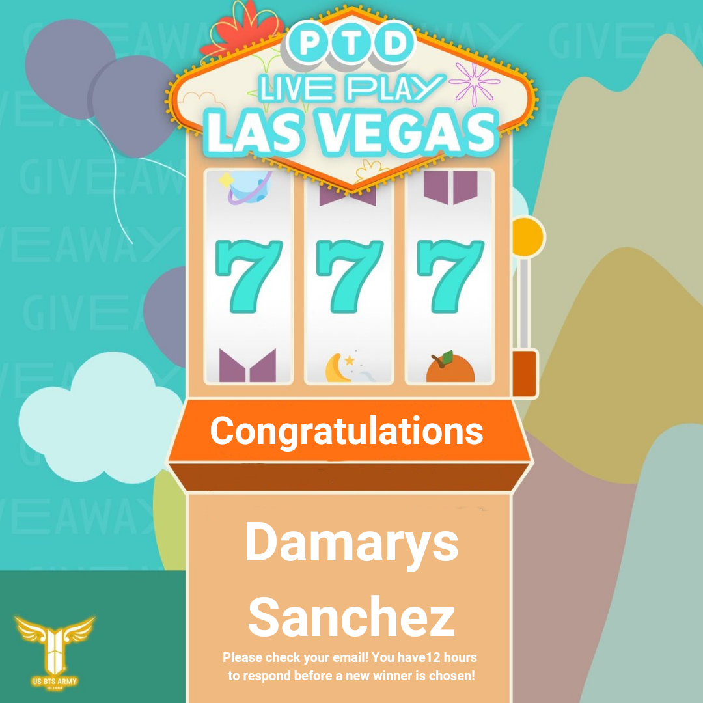
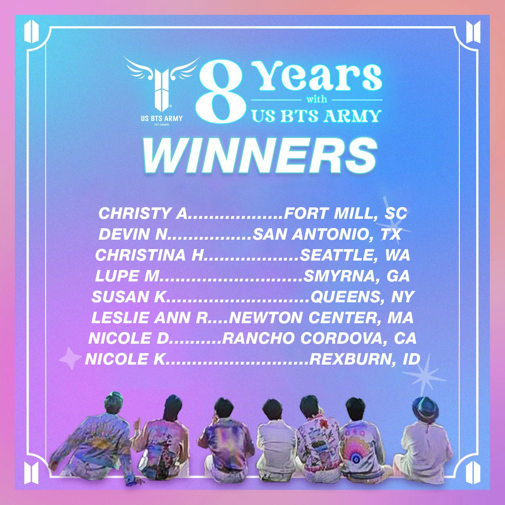
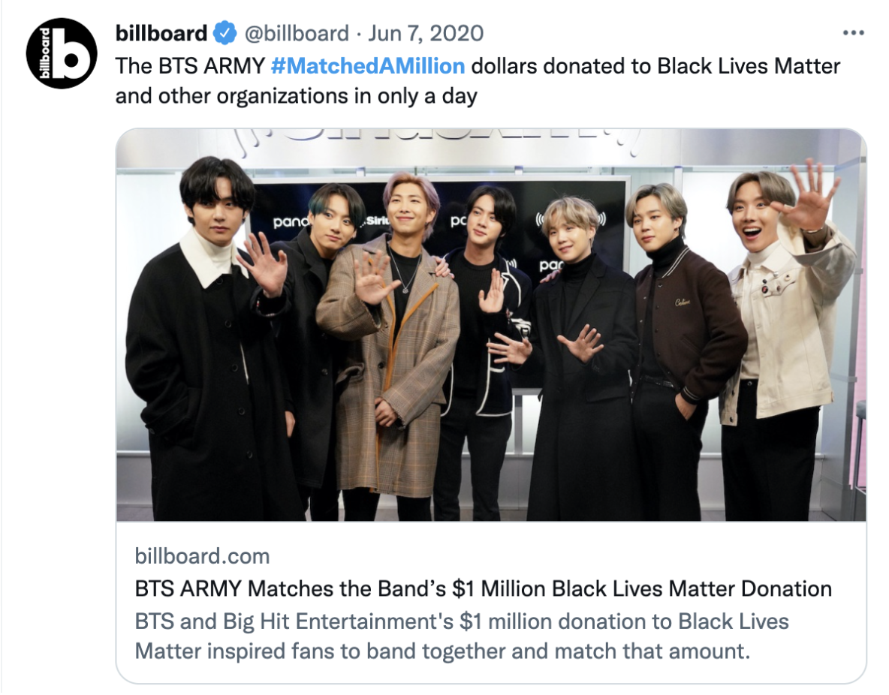
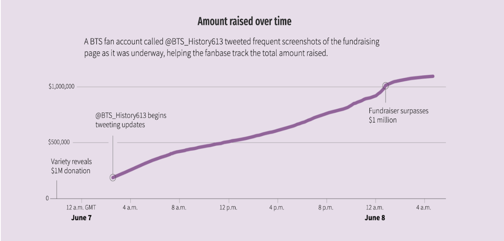
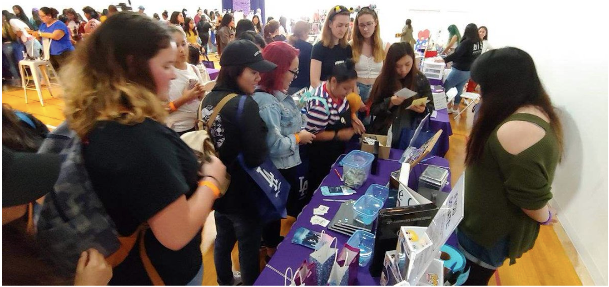
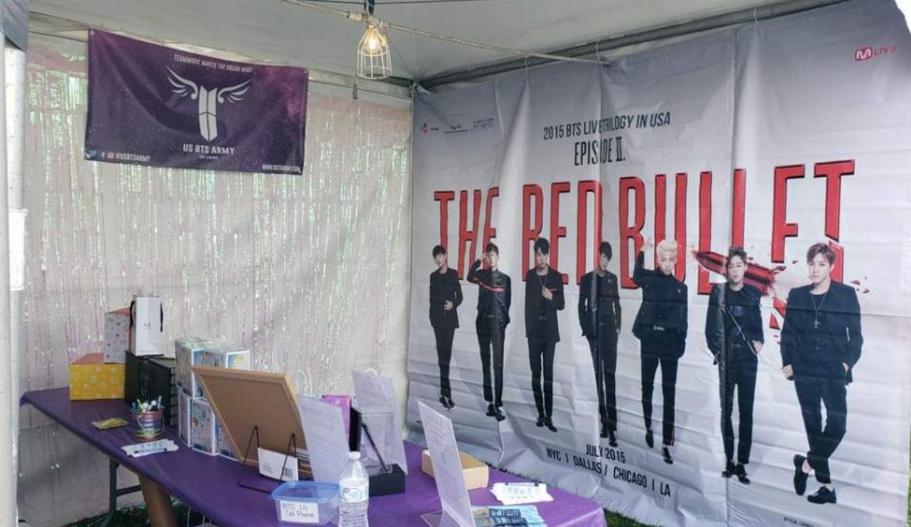

Giveaways
Different kinds of giveaway events that the ARMYs can participate are often organized to celebrate BTS’s newly released albums and the anniversary of ARMY organizations .
US BTS ARMY is turning 8 soon and as a pre-anniversary event, as a result they will be giving away 1 pair of regular tickets to the April 15 (FRI) “Permission to Dance On Stage - LIVE PLAY in Las Vegas” show!
In celebration of US BTS ARMY’s 8th year anniversary, they’re holding another giveaway!
Charity Project
Different charity projects and donation activities organized by the AMRYs are always out there.
 In just over 24 hours, a team of stans called One in an Army, had raised $1,026,531 thanks to 35,609 donors. If you’re thinking that’s a lot of allowance for some tweens, you gotta change your perspective on the BTS Army. One in an Army is a group of a volunteers who use the fandom’s collective power to make a difference.
ARMY Booths
The ARMYs could meet up with many others and hold poster and album giveaways as well as activities such as taking pictures with their BTS backdrop at the booths.
 